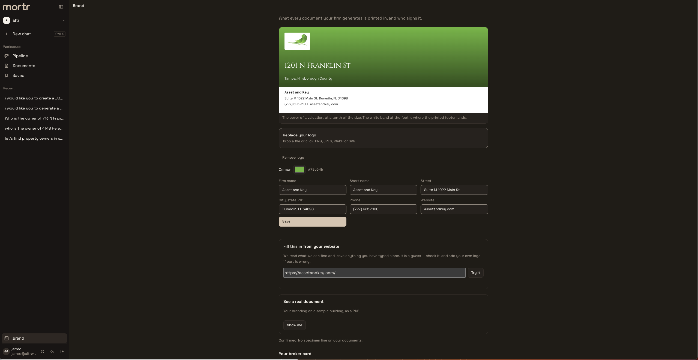
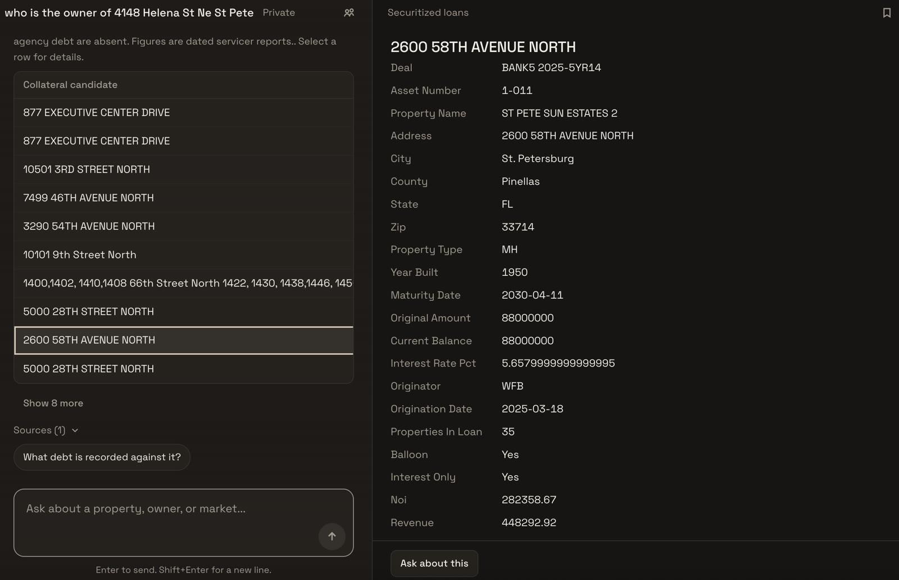

Contacts
Keep the people behind your opportunities in one workspace, alongside your property research.
mortr is a CRM for commercial real estate teams. Look up county property records, manage contacts and deals, and create broker opinions of value (BOVs) in your firm’s branding.
Property record coverage: Pinellas, Hillsborough, and Pasco counties, Florida.
Look up records from county property appraiser sites in mortr’s chat. Find the recorded owner, mailing address, parcel ID, and available property details without searching each county site separately.

Property research uses dated public records.
Property research is the start of the work. mortr gives your team a place to manage contacts, track deals, and follow each opportunity through your pipeline.
Keep the people behind your opportunities in one workspace, alongside your property research.
Track deal stages, values, owners, and next steps. Review your pipeline in a table or board, from the first lead to a closed deal.
Generate a broker opinion of value in your own branding. Add your logo, choose your brand color, and enter your firm’s contact details. Your broker card adds the name, photo, and contact information used on the document.

Save your firm’s logo, color, and contact details so you can use them across the BOVs you create.
Ask mortr to create a BOV for the property you’re working on, with your firm and broker details on the document.
Preview the PDF in your branding and review the property information and valuation before sharing it.
For properties matched to securitized loan records, mortr can show loan details alongside your research, including balances and maturity dates.

Loan details come from dated servicer reports and may not include all debt on a property.
What it does, where it works, and how your branding carries through to a BOV.
mortr is a CRM for commercial real estate teams. It combines property record lookup, contacts, a deal pipeline, and broker opinion of value (BOV) generation in your firm’s branding.
mortr supports property appraiser records in Pinellas, Hillsborough, and Pasco counties in Florida.
Enter an address in mortr’s chat to look up the recorded owner, mailing address, parcel ID, and available property details from county property appraiser records.
Yes. Add your logo, brand color, firm details, and broker card. mortr uses those settings to create BOV documents in your branding, which you can preview as a PDF.
mortr uses dated public records. Check the source records for updates when reviewing a property or preparing a BOV.
Visit our commercial real estate hub, read about Claude connectors for CRE, or explore the AI in Real Estate field guide.
We’ll walk you through property lookup, the CRM, and creating a BOV in your firm’s branding.